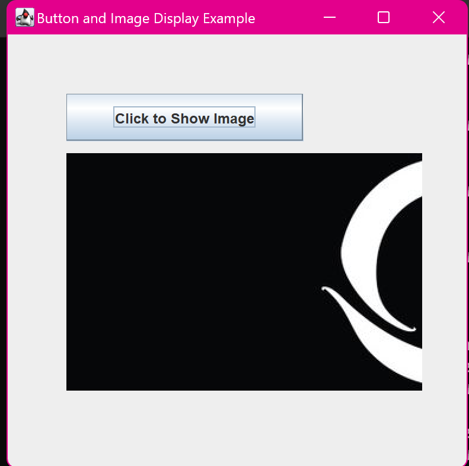

3. Java Program to Create a Button and Display Image in the
Frame when Clicked
import javax.swing.JFrame;
import javax.swing.JButton;
import javax.swing.ImageIcon;
import javax.swing.JLabel;
import java.awt.event.ActionListener;
import java.awt.event.ActionEvent;
class main {
public static void main(String[] args) {
JFrame frame = new JFrame("Button and Image Display
Example");
JButton button = new JButton("Click to Show Image");
JLabel label = new JLabel();
button.addActionListener(new ActionListener() {
public void actionPerformed(ActionEvent e) {
ImageIcon imageIcon = new ImageIcon("D:/Khushi
/BCA/Project3/logo.jpeg");
label.setIcon(imageIcon);
}
});
frame.setLayout(null);
button.setBounds(50, 50, 200, 40);
label.setBounds(50, 100, 300, 200);
frame.add(button);
frame.add(label);
frame.setSize(400, 400);
frame.setDefaultCloseOperation(JFrame.EXIT_ON_CLOSE);
frame.setVisible(true);
System.out.println("Displayed button, and ready to display
image on button click.");
}
}
